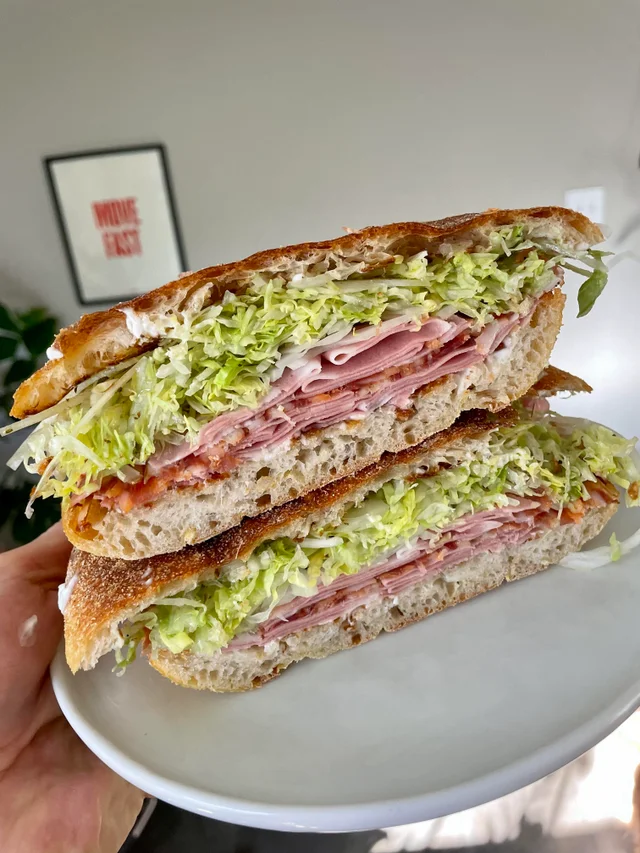

Mortadella Sandwich

I made this as a sleepless child. I guess I was just born with talent.( ◡‿◡ *)
INGREDIENTS:
Here is what you'll need (measure with however much sandwich you desire to consume):
- Sliced bread
- Sliced mortadella (please, do not use it as a whole block unless you a beast)
- Lettuce
- Mustard
- Mayonnaise
- Sliced Kashkaval cheese (you can use any kind of cheese you want)
- Ketchup (optinal)
- Onions (optional)
I was a child, do not judge until you try it.
STEPS:
- Spread mayo on both bread. If you want ketchup, then spread ketchup on one bread and mayo on the other.
- Then, add your mortadella, lettuce, mustard, cheese and onions.
- Close your sandwich and toast it. (or grill it, or eat it soft, idk, but the cheese gotta melt.)
- Now, bite into perfection.
EXTRA TIPS:
Now as a grownup, I would've done just a few things differently:
- Grill or fry your mortadella until it forms that brown crust thing.
- Wash your veggies (thankfully the lettuce I used as a child was washed... or was it?)
- Add chilli. Anything spicy makes everything taste better. Unless you don't enjoy pain.
Click here to go back.